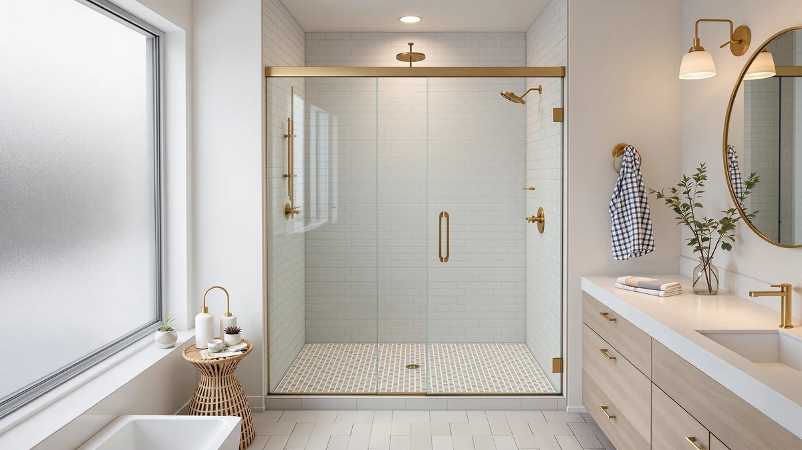

AVKENOEDY Frameless Dual Sliding Review (2026): Worth It?
Prices and picks verified as of August 2026. Independent, reader-supported reviews.


Quick Answer
This AVKENOEDY frameless dual sliding review compares the $549.99 door, built with 1/4 inch ANSI-certified tempered glass and a matte black stainless steel frame, against three lower-priced sliding alternatives ranging from $369.00 to $519.92. It's the priciest door in this comparison, but it also pairs the thickest frame hardware with the widest fixed opening among the four doors we looked at.
Our pick: AVKENOEDY Frameless Dual Sliding Shower — $549.99 Check Price on Amazon
Bottom line: our top pick is the AVKENOEDY Frameless Dual Sliding Shower Door 60"W x 74"H x at $549.99.
Things to Know Before You Buy
- At $549.99, the AVKENOEDY costs more than every alternative in this comparison. The WOODBRIDGE lists at $519.92, the Bathlink at $399.99, and the ENSO SENKA at $369.00.
- The 60 inch width and 74 inch height are fixed, not adjustable. The WOODBRIDGE alternative below spans an adjustable 56 to 60 inch range instead, which forgives an imprecise measurement.
- The frame is stainless steel in a matte black finish, with large rollers for the dual sliding panels. A nano coating on the glass is designed to resist water spots and hard water buildup.
- The glass measures 1/4 inch (6mm), ANSI-certified for tempered strength. That matches the ENSO SENKA's glass thickness but runs thinner than the WOODBRIDGE's 3/8 inch (10mm) panels.
- The listing doesn't show a rating or review count yet. It was added to the catalog in mid-August 2026, so there isn't an owner feedback history to weigh against the three alternatives below.
This AVKENOEDY frameless dual sliding review looks at whether a $549.99 shower door justifies its price against three sliding alternatives that each cost less. The AVKENOEDY's defining features are its stainless steel frame, its dual sliding panels, and a nano coating on the glass built to resist staining, and those details shape every comparison in this review.
We wrote this AVKENOEDY frameless dual sliding review because shoppers comparing 60 inch shower doors often assume every listing near that price point offers the same hardware. The AVKENOEDY sits at the top of this comparison on price, and that's why we weigh its fixed 60 by 74 inch dimensions and its glass thickness against three lower-cost sliding doors built for similar openings.
Why You Should Trust Us
Ilane Tall covers bath fixtures for Best Shower Doors and has researched shower doors across frameless, corner, and pivot designs. For this AVKENOEDY frameless dual sliding review, she compared the door's price, glass thickness, and frame material against three sliding alternatives in a similar size range. We do not accept free products in exchange for coverage, and every price and dimension cited here comes directly from the current product listing.
Our editorial process treats a stainless steel frame or a nano coating as one factor among several, not an automatic upgrade. Those details earn credit in this review, but the AVKENOEDY still has to justify a $549.99 price against three doors that list for less. That approach shapes every comparison in this piece.
Our Research Experience
This AVKENOEDY frameless dual sliding review is based on research, not physical use. We compared the AVKENOEDY Frameless Dual Sliding Shower against three alternatives using the specifications, pricing, and product listings available for each door. We do not run a fake testing lab, and we do not claim to have installed or lived with any of the doors covered here.
We looked closely at how the AVKENOEDY's 1/4 inch tempered glass and stainless steel frame compare to the WOODBRIDGE's thicker 3/8 inch glass and the Bathlink's aluminum structure, since frame material and glass thickness affect both durability and price in ways a size comparison alone would miss.
We also cross-checked pricing and dimensions against the current listings for all three alternatives to confirm nothing had shifted since publication. Where a data point wasn't available, such as a published rating or review count for the AVKENOEDY, we noted that gap rather than estimate a number the listing doesn't provide.
This AVKENOEDY frameless dual sliding review updates its pricing and specifications as listings change, so the figures above reflect what each seller published at the time we last checked. If a price shifts significantly after publication, treat the percentage difference between doors as more reliable than the exact dollar figures.
Overview & Specs

AVKENOEDY Frameless Dual Sliding Shower
What we like
- The stainless steel frame and large rollers are built for a quiet, smooth glide across both sliding panels
- The 1/4 inch (6mm) ANSI-certified tempered glass carries a nano coating designed to resist staining and hard water buildup
- The sealed, waterproof construction is aimed at keeping water inside the shower rather than on the bathroom floor
Flaws but not dealbreakers
- At $549.99, it costs $30.07 more than the WOODBRIDGE and up to $180.99 more than the ENSO SENKA
- The 60 inch width and 74 inch height are fixed, unlike the WOODBRIDGE's adjustable 56 to 60 inch range
- The listing doesn't yet show a rating or review count, so there's no owner feedback history to weigh against the alternatives below
| Material | — |
| Size | 60"W x 74"H x 1/4"T |
The AVKENOEDY Frameless Dual Sliding Shower is the priciest door in this comparison: a $549.99 build with a stainless steel frame, large rollers for the dual sliding panels, and 1/4 inch ANSI-certified tempered glass finished in matte black. The nano coating on the glass is designed to keep the surface easier to clean and more resistant to hard water spots over time.
That build costs $30.07 more than the WOODBRIDGE, $150.00 more than the Bathlink, and $180.99 more than the ENSO SENKA, the three alternatives covered below. The question is whether the stainless steel frame and nano coating are worth that premium over doors priced closer to $400.
What We Liked
The clearest strength in this AVKENOEDY frameless dual sliding review is the frame hardware. The stainless steel construction and large rollers are built specifically for the dual sliding mechanism, and that's a step up from the Bathlink's aluminum structure covered later in this comparison.
The 1/4 inch ANSI-certified tempered glass matches the ENSO SENKA's glass thickness and beats the Bathlink's 6mm panels on certification, while the nano coating adds a layer of stain resistance that neither the Bathlink nor the ENSO SENKA lists. Combined with a sealed, waterproof track, the AVKENOEDY packs more hardware than any other door in this group.
We also liked that the AVKENOEDY's dimensions are stated plainly at 60 inches wide by 74 inches tall, giving you an exact number to check against your own opening before you buy. That level of specificity carries through to the glass panel itself, which the listing states at 1/4 inch (6mm) rather than leaving thickness as a vague marketing claim.
The waterproof track and sealed design also stood out against the Bathlink, which relies on a magnetic seal strip rather than a fully sealed nano-coated surface. For a bathroom where water pooling at the base of the door is a recurring frustration, that difference in sealing approach is worth weighing alongside the price gap.
What Could Be Better
Price is the clearest drawback in this AVKENOEDY frameless dual sliding review. At $549.99, it costs $30.07 more than the WOODBRIDGE Frameless Sliding Shower, $150.00 more than the Bathlink 3-Panel Shower Sliding, and $180.99 more than the ENSO SENKA Corner Shower Enclosure.
The fixed 60 by 74 inch dimensions also mean less forgiveness for an imprecise measurement than the WOODBRIDGE, which adjusts across a 56 to 60 inch width. And because the listing hasn't accumulated a published rating or review count yet, you won't find owner feedback history the way you might for a longer-standing listing.
Who Is It For?
The AVKENOEDY Frameless Dual Sliding Shower makes the most sense if your opening measures close to 60 inches wide by 74 inches tall, and you'd rather pay a premium for a stainless steel frame and a nano-coated glass finish than settle for a lighter-duty build.
If your budget caps closer to $400, or if your opening doesn't match the AVKENOEDY's fixed dimensions, the three alternatives below cover a similar size range for less. Check each listing's width and height against your own stall, since the WOODBRIDGE adjusts where the AVKENOEDY does not.
Buyers who prioritize sizing flexibility over frame material should look at the WOODBRIDGE first, and anyone shopping a narrower stall or a corner layout will find the Bathlink and the ENSO SENKA a closer fit than a straight 60 inch alcove door like the AVKENOEDY.
Alternatives to Consider
The AVKENOEDY Frameless Dual Sliding Shower isn't the only option here, and the three doors below cover a similar size range at a lower price. Each one trades some combination of glass thickness, frame material, or footprint for a smaller price tag, so weigh which trade-off matters most for your bathroom.

Editor’s Pick
WOODBRIDGE Frameless Sliding Shower 56"-60"
At $519.92, the WOODBRIDGE undercuts the AVKENOEDY by $30.07 and adds an adjustable 56 to 60 inch width plus thicker 3/8 inch glass, a strong alternative if you want more sizing flexibility.
$519.92
Check Price on Amazon
Best Value
Bathlink 42"x78" 3-Panel Shower Sliding
The Bathlink lists at $399.99, $150.00 less than the AVKENOEDY, with a 3-panel sliding design built for a narrower 42 inch opening, worth a look if your stall is tighter than 60 inches.
$399.99
Check Price on Amazon
Premium Choice
ENSO SENKA Corner Shower Enclosure
The ENSO SENKA is the most affordable door in this comparison at $369.00, a corner enclosure with matching 1/4 inch glass, the pick if your bathroom has a corner footprint instead of a straight alcove.
$369.00
Check Price on AmazonFrequently Asked Questions
How much does the AVKENOEDY frameless dual sliding shower door cost?
The AVKENOEDY frameless dual sliding shower door lists at $549.99, which makes it the most expensive door in this comparison. The WOODBRIDGE alternative runs $519.92, the Bathlink is $399.99, and the ENSO SENKA corner unit is $369.00.
What size opening does the AVKENOEDY frameless dual sliding shower door fit?
The AVKENOEDY is built for a 60 inch wide, 74 inch tall opening with 1/4 inch tempered glass panels. Measure your stall at multiple points before you order, since a dual sliding door depends on an accurate width.
Is the AVKENOEDY frameless dual sliding shower door worth the price over the WOODBRIDGE alternative?
It depends on your opening height. The AVKENOEDY fits a fixed 74 inch height, while the WOODBRIDGE covers a 56 to 60 inch adjustable width at 76 inches tall for about $30 less. Check both height specs against your stall before you decide.
Final Verdict
This AVKENOEDY frameless dual sliding review comes down to one trade-off: a stainless steel frame and nano-coated glass at $549.99 against three sliding doors that cost less. If your opening measures close to 60 inches wide by 74 inches tall and you want the most hardware-forward build in this comparison, AVKENOEDY earns its premium over the WOODBRIDGE, the Bathlink, and the ENSO SENKA. If sizing flexibility matters more than frame material, the WOODBRIDGE covers an adjustable 56 to 60 inch range for $30.07 less, and the Bathlink or the ENSO SENKA offer bigger savings with a narrower or corner footprint. Either way, confirm your opening's exact dimensions before you buy, since that's what separates a fixed-size door like the AVKENOEDY from the adjustable alternatives in this review.